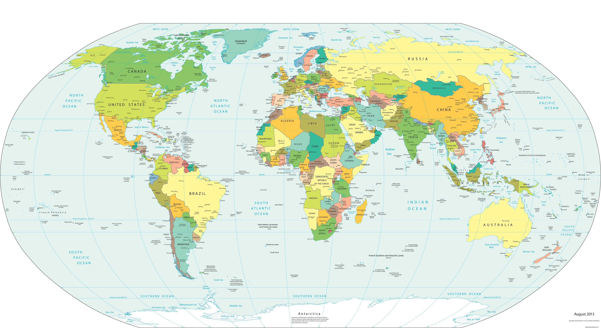
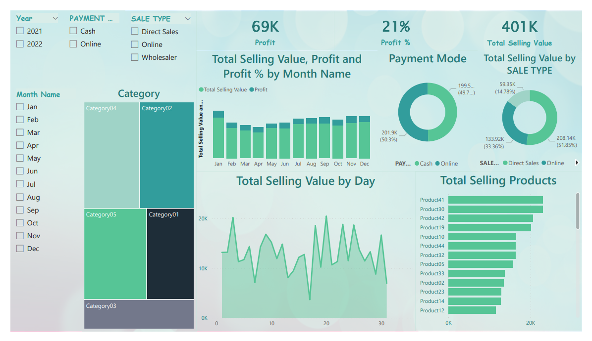
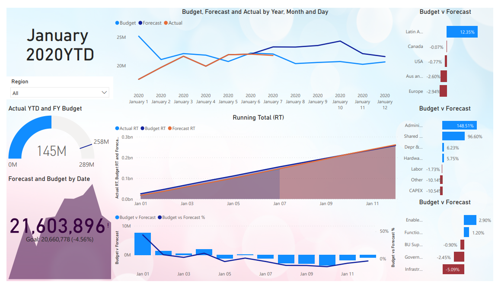

Created global total sales data visualization from a open source. Extracted and filtered data with SQL.
Data Visualization shows a world map, global numbers, continents number, and each country's infected number.


Created total total sales data visualization from a open source.
Data Visualization shows total sales, year, payment type.

Created budget, forecast, and actual sales data visualization from a open source.
Data Visualization shows by year, month, and day.
Find duplicates using row number and windows function of partition by clause.
Convert sale dates into standardized date format and remove unwanted columns.
Break out addresses into individual columns (Address, city, state).
Used predictive model and data visualization to formulate business decisions with the data set contained responses
from a survey that evaluated customer satisfaction.
Utilized Logistic Regression, Decision Tree, and Cluster Analysis to find the best model and knowledge to explain
and formulate business recommendations.
Estimated a model of the supply price to predict future prices.
Used the Variable Screening method to build models.
Conduct a partial F test repeatedly and find the best model from the proposed models.
After the final model has been selected, Conduct the Global F test for the adequacy of the model.
Define a one-to-many relationship between the Class Table and the related Members table. Use Query Design to create a query that lists members who have the Initiation Fee Waived. Use Query Design to create a query that lists Member Id, First Name, Last Name, Date Joined, Program Type, and Monthly Fee fields for members who joined the fitness center between June 1 and June 30, 2010. Use the Report Wizard to create a report.
Skills:
Data analytics, Report Generation, Model creation, Investment, Critical Thinking, and Data Visualization.
Software:
SQL, Power BI, R studio, SAS Enterprise Miner, Python, Tableau, Microsoft Office (Excel, Word, Powerpoint, Access).
Self-motivated, hardworking, and teamwork-oriented Data Analyst with experience in data consolidation and data verification. Come with solid computer proficiency, including a strong ability to use Microsoft Excel; the ability to work on various assignments in a fast-paced environment, and meeting deadlines. Bilingual in English and Vietnamese.